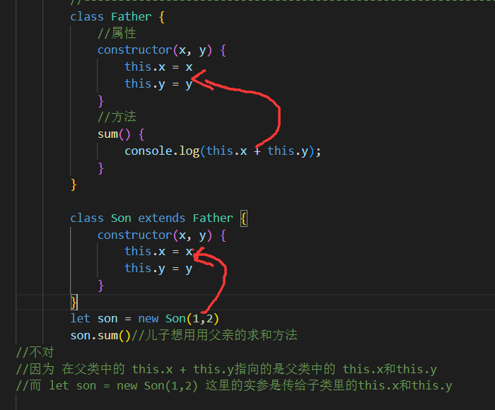
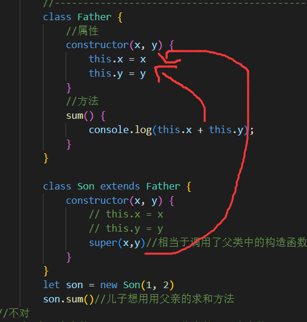

<!DOCTYPE html>
<html lang="en">

<head>
    <meta charset="UTF-8">
    <meta http-equiv="X-UA-Compatible" content="IE=edge">
    <meta name="viewport" content="width=device-width, initial-scale=1.0">
    <title>Document</title>
</head>

<body>
    <script>
        // 程序中的继承:子类可以继承父类的一些属性和方法。

        class Father {
            //属性
            constructor() {

            }
            //方法
            money() {
                console.log('有一百块钱');
            }
        }

        class Son extends Father {

        }
        let son = new Son()
        //子类啥也没有，但是他继承了父亲的 所以
        son.money()//有一百块钱

        //-------------------------------------------------------------
        class Father {
            //属性
            constructor(x, y) {//构造函数
                this.x = x
                this.y = y
            }
            //方法
            sum() {
                console.log(this.x + this.y);
            }
        }

        class Son extends Father {
            constructor(x, y) {
                // this.x = x
                // this.y = y
                super(x, y)//相当于调用了父类中的构造函数
                //就可以把子类的实参传到父类中去
            }
        }
        let son = new Son(1, 2)
        son.sum()//儿子想用用父亲的求和方法
        //不对
        //因为 在父类中的 this.x + this.y指向的是父类中的 this.x和this.y
        //而 let son = new Son(1,2) 这里的实参是传给子类里的this.x和this.y
        // 

        // -------super--------------------------------
        // super关键字用于访问和调用对象父类上的函数。
        // 可以调用父类的构造函数，也可以调用父类的普通函数
        // super就是父类的构造方法，要造儿子必须先造爸爸，所以儿子的构造函数中要有爸爸的构造函数
        // 

        //---------super调用父类的普通函数-------------------------------------------------
        //情况一：没继承时------------
        class Father {
            say() {
                return '我是爸爸'
            }
        }

        class Son {
            say() {
                return '我是儿子'
            }
        }
        let son = new Son()
        son.say()//我是儿子
        //情况二：继承时------------
        class Father {
            say() {
                return '我是爸爸'
            }
        }

        class Son extends Father {
            say() {
                return '我是儿子'
            }
        }
        let son = new Son()
        son.say()//我是儿子  就近原则
        //情况3------------
        class Father {
            say() {
                return '我是爸爸'
            }
        }

        class Son extends Father {

        }
        let son = new Son()
        son.say()//我是爸爸
        //情况4  super可以调用父亲的方法------------
        // super.say()就是调用父亲类的普通函数
        class Father {
            say() {
                return '我是爸爸'
            }
        }

        class Son extends Father {
            say() {
                console.log(super.say() + '的儿子');
            }
        }
        let son = new Son()
        son.say()//我是爸爸的儿子

//继承中的属性或者方法查找原则:就近原则


    </script>

</body>

</html>